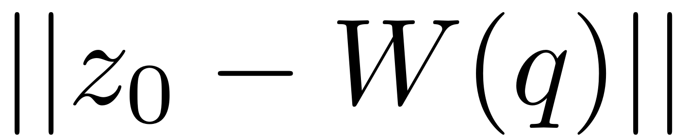

Project onto SSM
Contents
function varargout = proj2SSM(z0,projMethod,varargin)
PROJ2SSM
This function returns the projection of point z0 on an autonomous SSM. The information of SSM is given in the varargin arguments and we support both linear and nonlinear projection methods.
For projMethod=nonlinear we solve an optimization problem argmin_q , where the map W gives the expansion of SSM.
For projMethod=linear we find q from z0=Vq, which is solved using the orthonormality of V and W(left eigenvectors) with respect to B matrix
switch projMethod case 'nonlinear' W_0 = varargin{1}; % expansion of SSM autData = varargin{2}; % data for mapping between real and complex coordinates pV = varargin{3}; % initial guess of optimization fprintf('Call fminunc to find the projection of point on SSM\n'); options = optimoptions('fminunc','Display','notify'); options = optimoptions(options,'StepTolerance',1e-10); options = optimoptions(options, 'MaxFunctionEvaluations', 1e5); [z,fval,exitflag] = fminunc(@(u) squaDist2pointSSM(z0,u,W_0,autData), pV, options); % convert real representation to complex one x_real = z(autData.realx,:); x_comp = z(autData.compx(1:2:end-1),:)+1i*z(autData.compx(2:2:end),:); x = zeros(autData.dim, 1); x(autData.realx,:) = x_real; x(autData.compx(1:2:end-1),:) = x_comp; x(autData.compx(2:2:end),:) = conj(x_comp); varargout{1} = x; % projected point on SSM (coordinates in modal domain) varargout{2} = fval; % squared distance to projected point varargout{3} = exitflag; % flag for convergence of optimization routine case 'linear' Wm = varargin{1}; % left eigenvectors correspond to master spectral subspace B = varargin{2}; q = Wm'*B*z0; varargout{1} = q; otherwise error('Please select projection method to SSM from: {linear, nonlinear}'); end
end